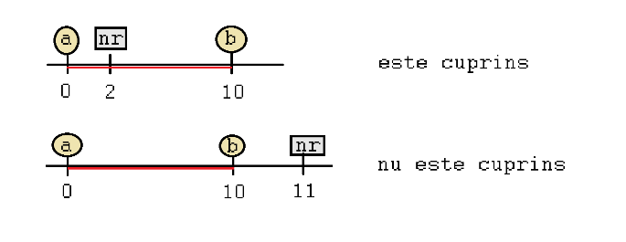

<< Home
True sau False?
Ne reamintim că în lecția trecută am povestit despre structura de decizie compusă din instrucțiuni de tipul if - else.
Pentru a înțelege mai profund semnificația acesteia, analizăm următorul scenariu real:
Acționarea unui întrerupător
“Programul” ar trebui să poată decide dacă aprinde sau stinge becul. Cum ar putea să facă asta?
- Pentru început acesta ar trebui să cunoască starea becului.
- Becul se poate afla în două stadii:
aprins
stins
Observăm că cele două stadii se potrivesc tipului de date bool al limbajului c++
true
false
astfel, putem reține valoarea becului într-o variabilă de tipul bool pe care să o numim sugestiv becul_este_aprins
această variabilă va avea valoarea TRUE dacă becul este APRINS și FALSE dacă becul este STINS
în acest fel, pentru a aprinde becul, variabila becul_este_aprins va trebui setată la TRUE, respectiv pentru a îl stinge variabila va fi setată la FALSE
așadar, presupunem că la orice acționare a întrerupătorului, becul ar trebui să se aprindă sau să se stingă, conform următorului fragment de cod c++
if(becul_este_aprins == true){ ///dacă becul este aprins
becul_este_aprins = false; ///stinge becul
}
else{ ///altfel
becul_este_aprins = true; ///aprinde becul
}
În final, pentru a nu afișa 0 sau 1, putem să mai construim un if statement pentru a afișa în cuvinte dacă becul este aprins sau nu.
#include <iostream>
using namespace std;
int main()
{
//declarăm o variabilă care indică starea becului
bool becul_este_aprins;
//citim starea inițială a becului de la tastatură
cout << "Cum este becul? stins:0 aprins:1 >>";
cin >> becul_este_aprins;
//stingem sau aprindem becul în funcție de starea acestuia inițială
if(becul_este_aprins == true){
becul_este_aprins = false;
}else{
becul_este_aprins = true;
}
//afișăm dacă becul s-a aprins sau s-a stins la acționarea întrerupătorului
if(becul_este_aprins == true){
cout << "Becul s-a aprins" << endl;
}else{
cout << "Becul s-a stins" << endl;
}
return 0;
}
Rezultatele așteptate sunt:
| Date de intrare |
Date de ieșire |
Valoarea finală a variabilei |
| 1 (true) |
Becul s-a stins |
0 (false) |
| 0 (false) |
Becul s-a aprins |
1 (true) |
Observăm că primul if statement afectează variabila în felul următor
| Variabila inițial |
Variabila după if |
| true |
false |
| false |
true |
Cu alte cuvinte, variabila primește valoarea inversă valorii inițiale
Această inversare a valorii se cheamă negare(nu) și se obține folosind operatorul ! (not) astfel încât
!true == false
!false == true
acest operator l-am mai întâlnit când am scris != (diferit) și semnifică nu este egal
folosind acest operator, putem modifica codul pentru a renunța la if statement
Cod inițial:
if(becul_este_aprins == true){
becul_este_aprins = false;
}
else{
becul_este_aprins = true;
}
|
Echivalent:
becul_este_aprins = !becul_este_aprins;
|
la fel ca și operatorul ! mai există și alți operatori folosiți pentru valorile booleene:
- Operatorul !v (not) (nu)
- Efectul acestuia este negarea valorii
| v |
!v |
| true |
false |
| false |
true |
- Operatorul && (and) (și)
- Operatorul se aplică asupra a două valori de tipul bool
- devine TRUE doar dacă ambele valori sunt TRUE
| a |
b |
a && b |
| true |
true |
true |
| true |
false |
false |
| false |
true |
false |
| false |
false |
false |
- Operatorul || (or) (sau)
- operatorul se aplică asupra a două valori de tipul bool
- devine TRUE dacă cel puțin una din valori este TRUE
| a |
b |
a || b |
| true |
true |
true |
| true |
false |
true |
| false |
true |
true |
| false |
false |
false |
Aplicații
- Să se verifice dacă un număr nr este cuprins între numerele a și b; (cu a < b)
Exemplu: nr=2, a=0, b=10 => DA
Exemplu: nr=11, a=0, b=10 => NU
- Pentru asta trebuie să verificăm
dacă nr > a și nr < b
#include <iostream>
using namespace std;
int main()
{
int nr;
int a;
int b;
cout << "nr>>";
cin >> nr;
cout << "a>>";
cin >> a;
cout << "b>>";
cin >> b;
if(nr > a && nr < b){
cout << "DA" << endl;
}else{
cout << "NU" << endl;
}
return 0;
}

- Să se verifice dacă un număr nr NU este cuprins între numerele a și b; (cu a < b)
Exemplu: nr=2, a=0, b=10 => NU
Exemplu: nr=11, a=0, b=10 => DA
- Pentru asta trebuie să verificăm
dacă nr <= a și nr >= b
#include
using namespace std;
int main()
{
int nr;
int a;
int b;
cout << "nr>>";
cin >> nr;
cout << "a>>";
cin >> a;
cout << "b>>";
cin >> b;
if(nr <= a || nr >= b){
cout << "DA" << endl;
}else{
cout << "NU" << endl;
}
return 0;
}
- Alternativ se poate verifica dacă numărul este cuprins între a și b, urmând negarea rezultatului (deoarece cele două cazuri se exclud reciproc: fie numărul este cuprins, fie nu)
if(!(nr > a && nr < b)){
cout << "DA" << endl;
}else{
cout << "NU" << endl;
}
- o variantă asemănătoare este doar schimbarea a ceea ce se afișează în consolă
if(nr > a && nr < b){
cout << "NU" << endl;
}else{
cout << "DA" << endl;
}